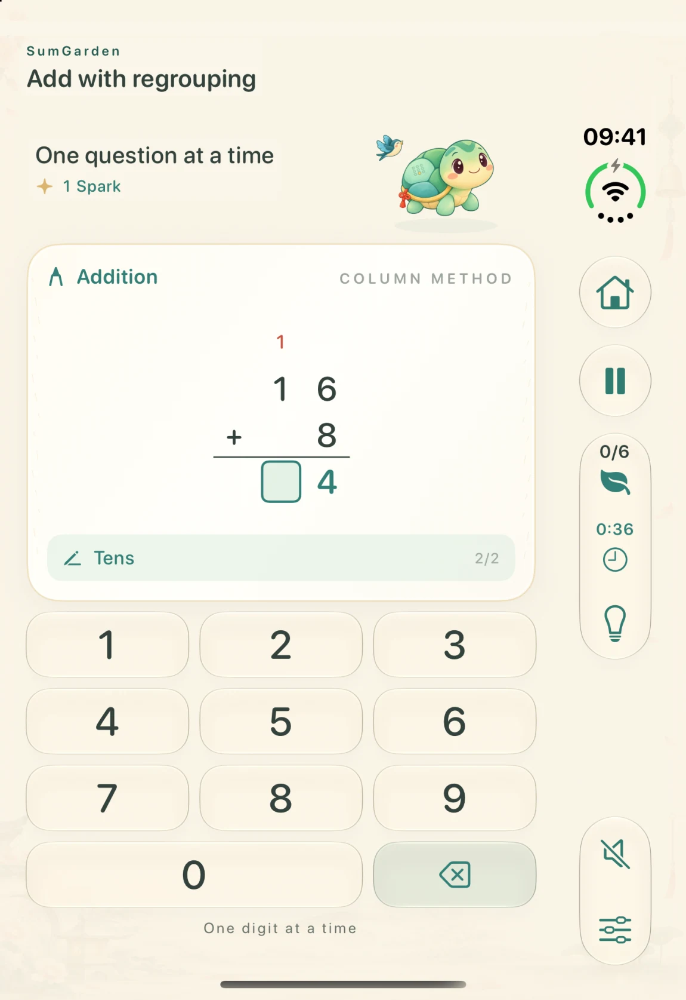
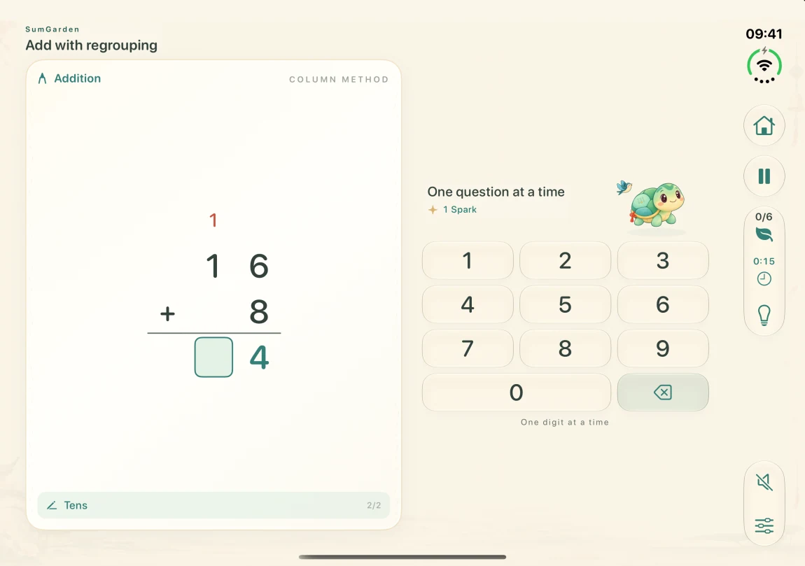

Grades 1–3
Free to download and practice
Build number sense, practice whole-number operations and explore early fractions. Your progress and review questions stay on this device.
Make ten, work through fractions and explore ratios with a little garden lion. Enter each digit and get a hint for the step in front of you.
Explore practice on iPhone Duo
On iPhone Duo, the folded layout puts pause, progress and hints in the right sidebar. Unfold to give the worksheet and keypad more room. The digits you entered stay with the problem.


Follow a progression of 58 arithmetic skills. Suggested grade levels are a starting point. Schools and countries teach these topics in different orders.
Free to download and practice
Build number sense, practice whole-number operations and explore early fractions. Your progress and review questions stay on this device.
US$2.99 · One purchase
Unlock upper-primary practice, including multi-digit operations, decimals, fractions, ratios and percentages. The App Store displays the price for your region.